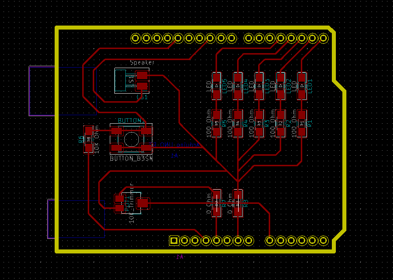
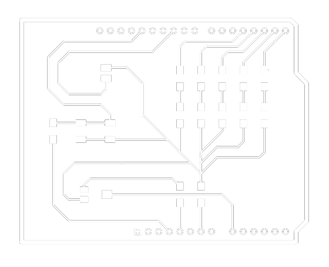

/electronics_design
(08_march_2022)
Electronics design was the chosen topic for FabAcademy this week. After talking about electronic
production in regards to PCB fabrication and welding components, this week we talked about the
components themselves.
During the session, we went through many different components, starting from the resistors, then
talking about capacitors, diodes, oscillators, transistors and regulators. For each component,
they explained the main function of it, the way to use it in a hypothetical circuit and also the
range of variations for one component depending on the use.
After this, Edu and Josep introduced some EDA software, programmes that are used to create circuits
and PCBs from scratch. Some of them are KiCAD, Autodesk Eagle and Fritzing. We were also told about
a website where we could find any kind of component called Digikey.
.designing_a_shield
For this week's task, we had to design our own circuit built in a shield style, meaning that all the components would be welded to the PCB that at the same time would be attached to the mainboard (in my case an Arduino UNO because I don't have the ESP32) without any cable.
For my PCB, I decided to create a circuit that would allow me to modulate the tone of a speaker using a potentiometer and also display with 5 LEDs if the tone of the speaker is high or low. For that, I needed these components:
- 5 LEDs
- 5 100 Ohm resistors for the LEDs
- 1 speaker
- 1 potentiometer
- 1 button (to turn ON or OFF the whole system)
- 1 10K Ohm pullup resistor
I started designing the circuit in Eeschema, placing all the components imported from the different libraries in a circuit form, and linking those components to the tags defined on the Arduino UNO board. This is how it looked after placing all the components:
After this, I changed to the PCB Layout Editor, inverted the Arduino UNO board, and started putting all the components into place, making sure they didn't disturb each other. I tried to design the PCB in a pretty way, not just sketchy since it really makes the difference. I had some issues when I was placing the potentiometer because the racks were colliding, so I had to create two 0 Ohm resistors in order to create some space for the necessary rack. Also, I followed the tutorial and changed the thickness of the lines in order to make it possible to mill, and tried not to draw 90 degrees connections. This is the result of the PCB design:

Finally, I exported the design to an SVG file and opened it on Inkscape to see the final result. This is how the PCB should be milled if we were planning to fabricate it:

All the files I created for this PCB are available to download by going to my Github profile or clicking here.